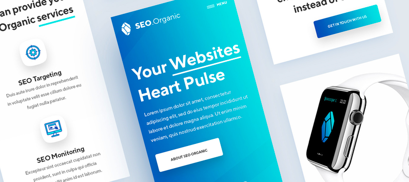

Dribbble

Over the course of this semester, one of the designerly curiosity activities that I chose to partake in is actively maintaining a Dribbble account. Around one year ago, I created a Dribbble account, but was never active on the site. It was one of the long list of things that you would like to do if there were more hours in the day. However, with this project, I was given the opportunity to maintain an account. As a website, I thoroughly enjoy Dribbble. There are so much creativity and inspiration that can be viewed and taken from the site. Whether it is website design, graphic design, or illustration, the website offers a variety of talented work and talented designers.
One of the features that I have been using is buckets. The save feature allows you to save your favorite designs in categories, called buckets. I currently have four buckets, one for web design, portfolio, new ideas, and special projects. Whenever I am starting or working on a project, I can use Dribbble and the designs in my buckets as a resource of inspiration. Some artists that I follow include Mike | Creative Mints and tubik. Mike | Creative Mints is a website and product designer from the Czech Republic. His works are very three-dimensional, interactive, and bursting with colors. Tubik is a company based in the Ukraine that focuses on website UI/UX design. Their graphic art is stunning with popping colors and free-flowing movements. Their style reminds me a lot of Dropbox’s newly redesigned brand. Dribbble is a innovative and motivating resource that I will continue to use years to come.